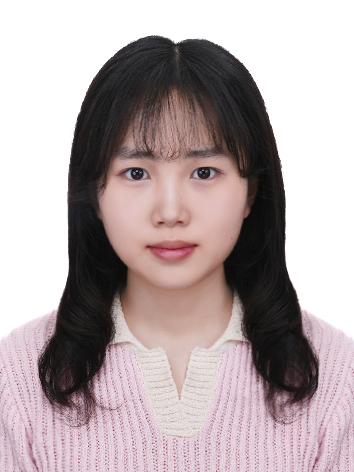
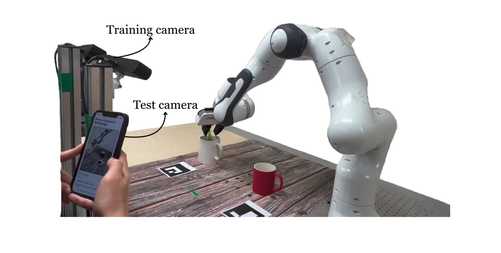

Jul 2026 - Present
Seoul National University Visual Computing Lab
Research Intern
I am an undergraduate at Seoul National University, double majoring in Mechanical Engineering and Electrical and Computer Engineering.
My research interests lie in robot learning, vision-language-action models, and 3D perception, with a focus on vision-based robot manipulation.
I am currently a research intern at the Visual Computing Lab at SNU.
I have worked on viewpoint robustness in VLA models, language-guided grasping, and sim-to-real data generation.

I am interested in how visual understanding can support robot manipulation across different viewpoints and environments.

Adapting camera observations through real-time novel view synthesis makes VLA policies robust to viewpoint changes without additional policy fine-tuning.
Research Intern
Research Intern
Worked on viewpoint-robust VLA models with real-time feed-forward novel view synthesis.
ESEP-G Research Intern
Developed an end-to-end grasping pipeline for the Pepper robot using large language models.
SNU CES Global Program
Built a real-time exercise guidance system combining computer vision-based pose estimation and a domain-specific RAG pipeline for context-aware voice feedback.
Pose estimation · Retrieval-augmented generation · Voice interaction
Developed an infant monitoring system with Raspberry Pi, OpenCV, and thermal sensors for real-time facial visibility and temperature monitoring.
Raspberry Pi · OpenCV · Thermal sensing
B.S. in Mechanical Engineering &
Electrical and Computer Engineering (Double Major)